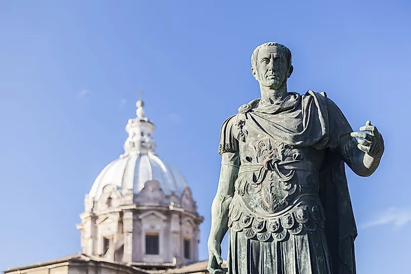
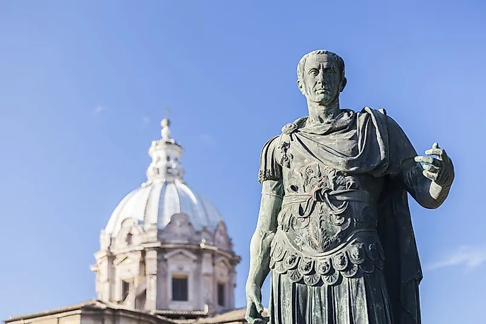

Establishment of the Roman Empire (27 BCE)
.jpeg) 

The establishment of the Roman Empire in 27 BCE marked a pivotal moment in history, transforming Rome from a republic beset by internal conflicts and civil wars into a powerful and expansive empire. This transition was largely orchestrated by Augustus Caesar, formerly known as Octavian, who became the first emperor of Rome. The Roman Republic, which preceded the empire, was characterized by a complex system of checks and balances, with power divided among the Senate, the Consuls, and the popular assemblies. However, by the 1st century BCE, this system was increasingly undermined by political corruption, social inequality, and military conflicts. The assassination of Julius Caesar in 44 BCE, after he had declared himself dictator for life, plunged Rome into a series of civil wars as various factions vied for power.
In the aftermath of Caesar’s death, the Second Triumvirate was formed in 43 BCE, comprising Octavian (Caesar's adopted heir), Mark Antony, and Lepidus. This alliance was initially successful in defeating Caesar’s assassins and consolidating power. However, tensions soon arose, leading to a split and subsequent conflict between Octavian and Antony. The decisive moment came in 31 BCE at the Battle of Actium, where Octavian's forces defeated the combined forces of Mark Antony and Cleopatra, the Queen of Egypt. Following their defeat, Antony and Cleopatra committed suicide, and Octavian emerged as the unchallenged ruler of Rome.
In 27 BCE, Octavian was granted the title "Augustus" by the Senate, symbolizing his supreme authority and marking the beginning of the Roman Empire. Augustus cleverly maintained the outward appearance of the republican framework while holding ultimate power. His reign initiated the Pax Romana, a period of relative peace and stability that lasted for over two centuries. Augustus centralized the administration, reformed the tax system, established a professional standing army and the Praetorian Guard (an elite unit responsible for the protection of the emperor), and rebuilt much of Rome, boasting that he had transformed the city from brick to marble. He also created a network of roads that facilitated communication and trade across the vast empire.
The establishment of the empire ushered in the Augustan Age, a period of cultural flourishing. Augustus patronized the arts and literature, with poets like Virgil, Horace, and Ovid producing works that celebrated Rome’s greatness and Augustus' achievements. The Aeneid, written by Virgil, became Rome’s national epic, linking the empire’s origins to the heroic narratives of the Trojan War. Augustus’ establishment of the Roman Empire set a precedent for future emperors and established a model of governance that balanced autocratic rule with a façade of republican traditions. His reign marked the beginning of the Roman Principate, a system where emperors wielded supreme power while ostensibly sharing authority with the Senate.
The Roman Empire continued to expand and evolve over the next several centuries, profoundly influencing the development of Western civilization. Its legal, political, architectural, and cultural legacies are still evident today. The fall of the Western Roman Empire in 476 CE marked the end of ancient Rome, but its impact on subsequent history has been enduring and transformative.